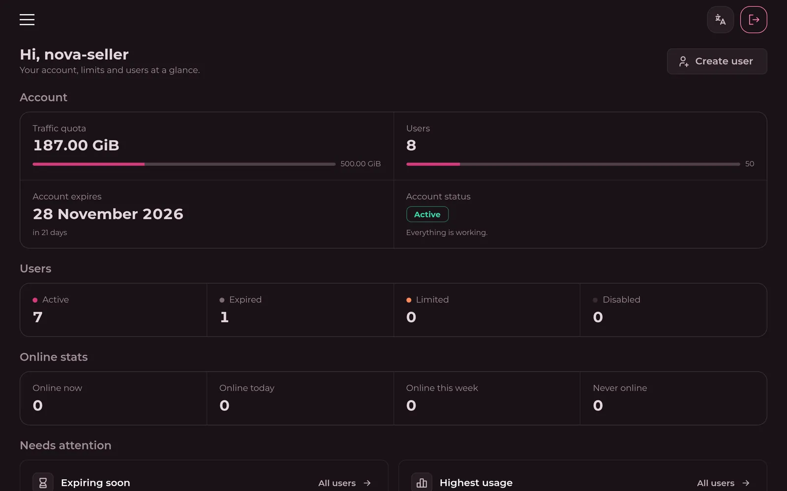

Three kinds of people meet Umiji. The owner runs the panel: servers, users, subscriptions, resellers and sales. The first account registered on a new panel becomes the owner's admin account.
Brokers are resellers. They sign in at the same address but see a smaller panel with only their own users. Customers, the end users, never see the panel. They meet Umiji through a subscription link, the subscription page and a broker's Telegram bot.
The open-source proxy engine that carries your users' traffic. It runs inside the Umiji node on each server. The panel never carries traffic itself: it writes Xray's configuration, adds and removes users, and reads back traffic numbers.
The node's Xray version shows on each node's card. Xray's own documentation, at xtls.github.io, explains every field you can set in a config profile.
A config profile holds inbounds. A node runs one profile and turns on some of its inbounds. A host points at one inbound and tells apps where to connect. An internal squad is a set of inbounds, and a user in that squad gets every visible host on those inbounds through their subscription link.
So when someone asks “why can't this user see Germany?”, walk the route: is the Germany host visible, is its inbound in one of the user's squads, and is that inbound on in a connected node?
One subscription: a person, or one of their devices, that connects through your servers. A user has a status, a traffic limit, an expiry date, the internal squads that decide which servers they get, and one personal subscription link.
Username
Required, and can't be changed later.
Telegram ID, email
Optional contact details.
Traffic limit
In GiB or other units. 0 means unlimited.
Expiry date
When the subscription ends.
Internal squads
Which inbounds, and so which hosts, the user gets.
External squad
Optional overrides for how their subscription is built.
The traffic limit caps how much a user can download and upload. When it's used up, the user becomes Limited. The reset strategy sets how often the counter goes back to zero.
Never reset
The default. The limit is for the whole subscription.
Day, week, month
Resets on a calendar schedule.
Month rolling
Resets every month counted from the user's own start, not the calendar.
A node's consumption multiplier changes how fast traffic counts on that node. You can also reset one user's traffic by hand, or many at once.
The date and time the subscription ends. The quick buttons add one month, three months or a year, and “year 2099” means practically never. Expiring users show in orange on the Users page so you can renew them in time.
Every user's personal address, like https://sub.example.com/<id>. Added to an app, it delivers the list of hosts the user may use, built for that app. Opened in a browser, it shows the subscription page. Apps re-fetch it from time to time, so changes you make reach users without sending a new link.
Treat it like a password. Revoke subscription, under the user's More actions, makes a new link and stops the old one.
User › Device & tag settings · Subscription › Settings › HWID settings
Limits how many devices can use one subscription. Supporting apps send a hardware ID with each request, and once a user reaches their limit, new devices are turned away with a message you write.
It only works when HWID limit is turned on in Subscription › Settings, and not every client app sends an ID. The fallback device limit applies to users without their own. A user can also opt out with Disable HWID limit.
User › Device & tag settings · Telegram bot › Plans · Telegram bot › Free trial
Limits how many IPs can use one user at the same time, across all nodes. Unlike the HWID limit, it also stops people who copied the raw config or UUID, because it watches live connections instead of subscription downloads.
An IP holds a slot while it has an open connection, so devices on one Wi‑Fi count once, and a new IP is refused while every slot is taken. Over IPv6, every address in one /64 counts as one. Each node enforces it at once, and the panel compares nodes every 30 seconds. Empty means unlimited.
Devices at once on a plan or on the free trial gives every subscription the bot creates from it this limit.
This is a beta and won't always work. It can let extra devices in, and it can turn away a paying user's own phone. Read the risks before you turn it on.
The simultaneous IP limit counts IP addresses, not people or devices, so it gets some cases wrong in both directions. Try it on a few users before you sell it in plans.
It can refuse a paying user's own device. A phone that moves from Wi‑Fi to mobile data gets a new IP while its old connections are still open on the node. With a limit of 1 it's refused until they close: up to about a minute and a half on RAW, and up to about 6 minutes on WebSocket, gRPC and XHTTP. A phone using Wi‑Fi and mobile data together, or IPv4 and IPv6 together, can count as two devices.
Extra devices can get in. A second device on another node works for up to about 30 seconds before it's cut, and the cut closes its connections mid-use. If the panel can't reach a node, or a node's core has just restarted, that node counts only its own IPs for a while, so one user can get a slot on every node.
A connected device can lose its slot to a newcomer. The panel only keeps a slot for a device it sees online. If it misses one for a moment, because that device's node restarted, a config profile edit restarted the cores, or a node didn't answer, a device waiting on another node can take the slot, and the first one is cut.
People on one network count as one. Everyone behind the same router or office shares an IP, and mobile carriers often put many customers behind one IP too. Friends sharing a config on the same network or carrier can all get in.
Behind a CDN or a relay it needs setup on the node. Without it, connections arrive from the CDN's or the relay's addresses, so one device can look like several and get refused at random, and an app could even claim an address of its choosing. Follow IP limit behind a CDN before you limit users on such an inbound.
Nodes need the current Umiji node. A node with an older version or a stock Xray core doesn't enforce the limit at all. The panel only writes a warning to its log.
Some paths skip it.Bulk actions never set a limit. On UDP transports like mKCP, a device that already got in can't be cut, only refused next time.
Config profile › Inbound › Sockopt · nginx on the node
When an inbound sits behind a CDN, like Cloudflare, users connect to the CDN and the CDN connects to the node. The node then sees the CDN's addresses, which change from one connection to the next, so the simultaneous IP limit counts one phone as several devices and refuses it at random. Two changes on the node give it each user's real IP.
Only HTTP transports go through a CDN: XHTTP, WebSocket, HTTPUpgrade and gRPC. RAW with REALITY and the MTProto inbound reach the node directly, so they already see real IPs.
1. Let Xray take the IP from the header. In the config profile, open the inbound, find Sockopt and add X-Forwarded-For to Trusted X-Forwarded-For. Set Listen to 127.0.0.1 too, so only nginx on the same server can reach the inbound. In JSON:
2. Put nginx on the node in front of Xray. Xray uses the first address in X-Forwarded-For, and the app can write that one itself: the CDN keeps whatever the app sent and adds the real address after it. Someone sharing a config could make every device claim the same address and get past the limit. nginx on the node trusts only the CDN, reads the header from the end to find the real address, and passes Xray just that one.
map $http_upgrade $connection_upgrade {
default upgrade;
'' close;
}
# The CDN's ranges, one line each. Cloudflare lists them on https://www.cloudflare.com/ips/
set_real_ip_from 173.245.48.0/20;
set_real_ip_from 2400:cb00::/32;
# ...the other ranges
real_ip_header X-Forwarded-For;
real_ip_recursive on;
server {
listen 443 ssl http2;
server_name node1.example.com;
ssl_certificate /etc/letsencrypt/live/node1.example.com/fullchain.pem;
ssl_certificate_key /etc/letsencrypt/live/node1.example.com/privkey.pem;
# XHTTP: the inbound on 127.0.0.1:10001, path /xh
location /xh {
proxy_pass http://127.0.0.1:10001;
proxy_http_version 1.1;
proxy_set_header Host $host;
proxy_set_header X-Forwarded-For $remote_addr;
proxy_buffering off;
proxy_request_buffering off;
client_max_body_size 0;
proxy_read_timeout 1h;
}
# WebSocket or HTTPUpgrade: the inbound on 127.0.0.1:10002, path /ws
location /ws {
proxy_pass http://127.0.0.1:10002;
proxy_http_version 1.1;
proxy_set_header Upgrade $http_upgrade;
proxy_set_header Connection $connection_upgrade;
proxy_set_header Host $host;
proxy_set_header X-Forwarded-For $remote_addr;
proxy_read_timeout 1h;
}
# gRPC: the inbound on 127.0.0.1:10003, service name gr
location /gr {
grpc_pass grpc://127.0.0.1:10003;
grpc_set_header X-Forwarded-For $remote_addr;
grpc_read_timeout 1h;
client_max_body_size 0;
}
}
Get a certificate for the node's domain first, with certbot certonly --nginx -d node1.example.com (turn off Cloudflare's Always Use HTTPS while it runs) or a Cloudflare origin certificate. Then run nginx -t && systemctl reload nginx. In Cloudflare, set SSL to Full (strict), and turn on gRPC under Network if you use it. Keep only the location blocks you need, with your inbounds' ports and paths.
3. Point the host at the CDN. The host for that inbound uses the CDN domain as its address, port 443, TLS, and the same path or service name.
Check it. Connect one phone and open Sessions Explorer: the user should show the phone's own IP, not a CDN address. If you see CDN addresses, step 1 is missing.
A relay server in front of the node, which just forwards TCP, hides IPs the same way. If it can send the PROXY protocol, like HAProxy's send-proxy or proxy_protocol on in nginx's stream block, turn on Accept Proxy Protocol in the inbound's Sockopt. The inbound then accepts only connections that start with that header, so let only the relay reach its port in the node's firewall. Anyone else could claim any address.
A tag, like PREMIUM, labels users for your own sorting and filtering. It shows as a chip in the users list. The description is a free note only you see.
Select users with the checkboxes to update, reset traffic, revoke subscriptions, extend expiry dates or delete many at once. The ⋮ menu next to Create has the same actions for every user. Bulk jobs run in the background and the panel tells you when they're queued.
A group of users and the inbounds they can use. It's how you control access: a user gets hosts only for inbounds in their squads. A user can be in several squads, and gets everything those squads allow together.
For example, make a Free squad with one country and a Premium squad with the rest. Free users join Free, paying users join both. The squad's card shows its members and inbounds, and its menu can add or remove every user at once.
Brokers see only the squads you allow them, shown by country and protocol, never with node details.
Where an internal squad decides what a user can reach, an external squad changes how their subscription is built. A user has at most one. Without one, the global subscription settings and the Default templates apply.
Templates
Use a different template per client type for this group.
Settings
Override subscription settings, like the profile title. An override set to an empty value still overrides. Delete it with the trash icon to undo.
Hosts
Override host fields for every host these users get.
Subscription page
Which page these users see.
Each broker gets an external squad of its own, named after it, so its users always get the broker's page and settings.
A server running the Umiji node: a small Docker container with Xray-core inside. The panel talks to it over an mTLS connection on the node port, sends it a config profile and its users, and reads traffic back.
Internal name
Only you see it.
Country
Sets the flag in the list.
Address, node port
Where the panel reaches the node. The port defaults to 2222 and must be open to the panel.
Core configuration
The config profile the node runs, and which of its inbounds are on.
Traffic limit
Optional cap for the whole node.
The list shows each node's status, users online, load, traffic and Xray version. A red dot means the panel can't reach it.
Give the panel the server's IP, SSH port and root password. It logs in over SSH, checks the system, sets up Docker, writes the node's docker-compose.yml, starts the node, checks it can reach it, and adds it to the panel. You watch each step with live output.
The password is used once and never stored. The server needs Linux on x86_64 or ARM64 and a root login. If it stops at the handshake, open the node port in the server's firewall. The install keeps running if you close the window.
The panel shows a docker-compose.yml with the node's secret key. You copy it to the server and start it yourself, and the panel waits until it connects and reports “Xray Core is up and running”.
Counts traffic on a node faster or slower than it really is: 1.0 is normal, 0.5 counts half, 2.0 counts double. With a 1 GiB limit and a 2.0 node, a user can really use only 0.5 GiB there. Useful when some servers cost more than others.
If the panel can't reach a node directly, set the node's Proxy URL to a socks5:// or http:// proxy. The panel then talks to that node only through the proxy. A proxy on the panel's own server must listen on Docker's address, not only on 127.0.0.1.
A shell on the node, in the browser, on a computer or a phone. Each node gets its own key, made in your browser and kept there in an encrypted vault. The panel never sees the private keys.
Write down the 12-word recovery phrase: it's the only way to restore the keys. You can export an encrypted backup, and the terminal warns you if a server's host key changes.
Add-ons that run on your nodes next to Xray, like the torrent blocker that fills Torrent Blocker Reports. Shared lists can feed several plugins, and syncing pushes changes to every node that uses them. It's an advanced feature, so read each plugin's notes before turning it on.
A record of what your servers cost and when payments are due. Add your hosting providers, link nodes to them with their price and next payment date, and log each payment in the history.
Config profiles
The Xray setups your nodes run. Menu › Config Profiles.
A complete Xray server configuration: inbounds, outbounds, routing, DNS and the rest. Each node runs one profile, and many nodes can share the same one. Umiji fills in the users of managed inbounds for you, so a profile never lists users itself.
The profile's card shows how many inbounds it has and how many nodes run it. Both are clickable.
A profile opens in the Visual editor: forms for every Xray field, grouped into Inbounds, Outbounds, Routing, DNS, Log, Policy, Observatory, FakeDNS, Geodata and Advanced. The JSON tab shows the same config as text, with Xray's documentation on hover. Both edit one document, and undo works across them.
A lightweight Xray core in your browser checks each change. Red dots lead you down to the field that's missing or wrong. Save anyway skips the check, for the rare case you know better. The ☰ menu next to Save copies the config, generates key pairs and loads examples from GitHub.
One port a node listens on, with a protocol and its settings. Its tag is a unique name: hosts, squads and nodes all point at an inbound by its tag. Each inbound has tabs for General, Settings, Transport, Security, Socket, Finalmask and Sniffing.
An inbound does nothing for users until a node turns it on, a host points at it and a squad includes it.
Mixed (SOCKS5 and HTTP), HTTP, Tunnel, WireGuard and TUN inbounds also work, but Umiji passes them to Xray exactly as written and doesn't manage their users.
How the protocol's bytes travel: RAW (plain TCP), XHTTP, WebSocket, HTTPUpgrade, gRPC or mKCP. Some pass through CDNs and HTTP proxies (WebSocket, HTTPUpgrade, gRPC, XHTTP), others go straight to the node. The host inherits the transport, so apps get it right automatically.
REALITY needs no certificate and no domain of your own. It borrows the TLS of a real website, the Target, so to an observer a connection looks like a visit to that site. Server names lists the names clients may use, and work like a password: a host using a name that isn't on the list won't connect. The private key and short IDs are generated for you.
TLS uses your own domain and certificate, and is what Trojan and Hysteria 2 need. For VLESS over TLS or REALITY on RAW, Umiji adds the xtls-rprx-vision flow by default.
Key pairs are made in your browser. Use the sparkle button inside a field, or Generate keypair in the editor's ☰ menu. Besides REALITY's x25519 keys, it makes ML-DSA-65 and ML-KEM-768 keys for VLESS encryption.
An inbound that works as a Telegram proxy. It looks like a normal HTTPS site, and users add it right inside the Telegram app, with no VPN app. Each user gets their own secret, so usage counts per user like any other inbound, and revoking the user changes it.
It only takes the settings the Telegram app can use, so most fields are locked. VPN apps never receive these hosts, while the subscription page shows the tg:// link. A sponsored channel from @MTProxybot can be set on the inbound or per user, and brokers set it for their own users. The user's tag wins.
Reusable pieces of config shared by many profiles. Define an outbound or a routing rule once as a snippet, then write { "snippet": "name" } in any profile's outbounds or rules. Change the snippet and every profile that uses it changes too.
Subscription
What users receive when their app asks for the subscription. Menu › Subscription.
The client side of an inbound. A host is one entry in the user's app: a name, an address and a port, plus everything it inherits from its inbound. A subscription is the list of hosts a user may use.
Host visibility
Off for a new host. Turn it on to include the host in subscriptions.
Remark
The name users see. A flag emoji at the start shows as a flag.
Inbound
Required. The host takes its protocol, transport and security from it.
Address, port
Usually the node's domain or IP and the inbound's port. Several domains separated by commas means each request gets one of them at random.
Turning a host off doesn't cut anyone off right away: users who already have it keep connecting until their app refreshes the subscription.
The base configs Umiji builds a subscription from, one set per client type: Xray JSON, Mihomo, Stash, Singbox and Clash. Umiji spots which kind of app is asking and fills that type's template with the user's hosts. Routing rules, DNS and app settings live here.
Each type has a Default template. You can add more and hand them to groups through an external squad or a response rule, and a response rule wins over an external squad.
HTTP headers sent with every subscription. Many apps read them: profile-title names the subscription in the app, profile-update-interval sets how often it refreshes, in hours, and support-url and profile-web-page-url add links.
Start a value with umijiEncodeBase64: and Umiji encodes it, which apps need for non-Latin text. {{SUBSCRIPTION_URL}} is replaced with the user's link.
Decide what each client gets when it asks for a subscription. A rule matches the request's headers, like the app's User-Agent, and sets the response, for example a specific template. Rules beat external squad overrides. The debugger gives you a cURL command to test which rule a request would hit.
A wrong rule can break subscriptions for everyone, so the page asks you to confirm before you edit.
What users see when they open their link in a browser. The top shows their usage as a tide that drains as traffic is used, and the expiry date. Below it, install steps for their platform: which app to get, a button to add the subscription and how to connect. Persian and English are built in.
You can keep several pages and choose one per external squad. Every broker gets its own page to brand, with one of eight main colours: rose, ruby, emerald, teal, sky, sapphire, plum and orchid. Changes show up right away, without a restart.
The apps your users connect with, like Happ, v2rayNG, FlClashX and Clash Meta on Android. Each one imports the subscription link, shows the hosts, and connects to the one the user picks. Which apps the subscription page offers, and their install steps, is set per platform in the page's config.
Brokers and sales
Selling through resellers. Menu › Users › Brokers, and the broker's own Telegram section.
panel.example.com/dashboard/broker/overview

What a broker sees first: their quota, users limit and expiry.
Brokers sign in at your panel's address and get a menu of their own: an Overview with their quota, users limit and expiry; Users; Internal Squads they may use, by country and protocol; their Subscription Page and Subscription Settings; the Telegram bot pages; and Quick Open. Alerts warn them before the quota or the account runs out.
Each broker can run a shop in Telegram. Customers top up a wallet, then buy a plan in one tap and get their subscription link in the chat. Every subscription sold is one of the broker's users and counts toward their limits.
To connect it: create a bot with @BotFather, make a group with Topics turned on, add the bot as an admin that can manage topics, then paste the bot token. The Group ID Finder fills in the group: send /find in it. The group becomes the staff room where receipts, orders and stats arrive.
A plan is what customers buy: a traffic limit, a duration, the internal squad it runs on, an optional limit on devices at once (beta) and a price in Toman. Traffic 0 means unlimited, but all of that usage comes out of the broker's quota. Pause a plan to stop selling it without deleting it. Categories group plans into sections of the bot's buy menu.
Sales pause on their own while the broker is disabled, expired, out of quota or at their users limit.
Customers pay from a wallet inside the bot. To top it up, they pay to one of the broker's methods (bank cards, crypto wallets, or others like PayPal, Wise, IBAN, SBP or YooMoney) and send a photo of the receipt. Staff approve or reject it in the group or on the Orders page, and the customer is told either way. Brokers can also credit a wallet by hand by the customer's Telegram ID.
Every customer gets a personal invite link under “🤝 Invite friends”. When someone who first opened the bot through it gets a top-up approved, the inviter gets a share of it, a percentage the broker sets. It's one level only, and 0% turns it off and hides the button. Credit added by hand from the panel pays no reward.
A free test plan, with its own traffic, duration, squad and optional limit on devices at once (beta), that each Telegram account can claim once under “🎁 Free trial”. Each trial is one of the broker's users. Reset lets every account claim it again, and trials already given out keep working.
The duration can be in days or hours. An optional daily cap stops handing out trials for the rest of the UTC day once it's reached; customers are told to come back tomorrow. Delete expired trial users removes each trial user a day after it expires, so it stops counting toward the broker's users. Turning it on also deletes trials that expired earlier, and trial users extended by hand once they expire again.
Channels customers must join before they can use the bot. The bot must be an admin of each: if it can't check membership, it lets everyone through. A separate public channel link can show as an “Our channel” button next to Support.
Every message the bot sends can be rewritten in each language it speaks, with a live phone preview. The bot speaks English, Persian, Arabic, Russian, Turkish and Simplified Chinese. The broker turns languages on and picks a default. New customers start in their Telegram app's language when the bot speaks it, and with more than one language on, they get a 🌐 button to switch. The staff group always gets the default.
Customers, sales, top-ups, free trials and referrals, by day in UTC. Group admins can ask for the same numbers with /stats, and a daily summary is posted in the staff group's Stats topic, along with new customers, purchases, trials and rewards as they happen.
A message from you to the customers of every connected broker bot, with an optional image up to 10 MB. Each broker's own bot delivers it in the background. Sending can't be undone. Brokers see a notice that platform announcements may reach their subscribers.
The devices that have used each subscription, as reported by apps that send a hardware ID. Use it to see who shares a link, and to remove a device so a new one fits under the limit.
Subscription request history: every time an app fetched a subscription, which app asked and what it got. The first place to look when a user says “my app shows nothing”.
How admins sign in: a password, passkeys, Telegram, or an OAuth2 provider: GitHub, Yandex, Keycloak, PocketID or any generic OAuth2 server. Passkeys need the full HTTPS origin of your panel. Keep at least one method you can always use.
Keys for programs that talk to the panel's API, including the subscription page server, which needs one in its UMIJI_API_TOKEN. A token is shown only once, right after you create it, so copy it somewhere safe. Requests from scripts without a token are refused. The API guide covers scopes, requests and every endpoint.
Your own logo and title on the sign-in page and in the menu. The logo is an image URL or a data: URL. Colour single words of the title with {color}word, using a hex colour or a colour name: without a marker, text is white.
The panel is complete in English and Persian, with right-to-left layout for Persian, and partly translated into Russian and Chinese. Switch with the 文A button at the top. In Persian, numbers show in Persian digits, while what you type, save and copy stays in plain 0–9.
Traffic, users and how the panel itself is running. The runtime cards show each Umiji process: the API that serves the panel and subscriptions, the scheduler that queues timed jobs, and the processor that runs them, such as node health checks and traffic counting.